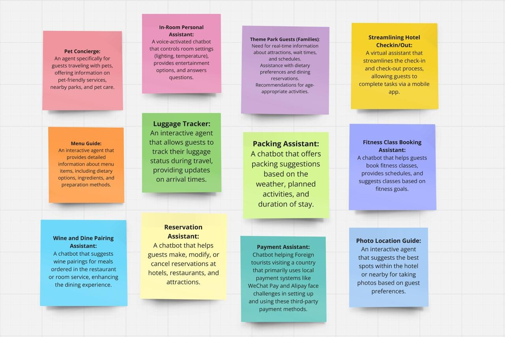
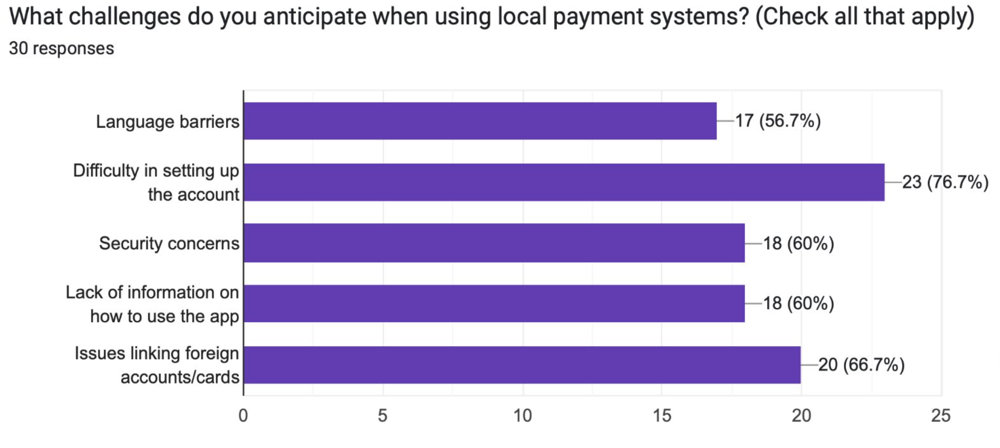

Portfolio
Our goal was to identify a market with the need for a voice/chatbot. We came up with the idea to implement a voice/chatbot that would be able to answer questions from foreigners about how paying works when they arrive in a new country and how to set up e-payment solutions if available. Airports in different countries should have a fixed computer station with our system installed, where foreigners then can ask any questions to the bot in order to achieve being able to pay somehow in the given country. The idea is to eliminate the risk of foreigners feeling uncomfortable in a country, not knowing how payment works and maybe also not capable of communicating with any locals because of different languages.
First phase involved brainstorming what different areas could potentially benefit from a voice/chatbot. The ideas we came up with can be seen in Figure 1.
Figure 1
Next phase was to empathize with the users to understand specific user needs
in order to implement a solution, which can create value by solving real
problems. By understanding these needs, we were able to identify pain points
of the users, and areas which potentially could benefit from a voice/chatbot.
We chose to go with the payment assistant (turquoise label on Figure 1),
since all in the group agreed that this would be a really nice tool to have.
We conducted an anonymous interview with 14 questions and 20 participants.
The survey confirmed us, that it is a common experience having problems
with figuring out local payment, and therefore they would actually be interested
in our solution. Figure 2 shows the different problems people have experienced.

Figure 2
We created storyboards and case examples in order to discuss different design options followed by making a final decision on how our voice/chatbot should be implemented. One of our case examples can be seen in Figure 3.Figure 3
We then created a Python project for our code and ended up with a functioning voice/chatbot that could answer specific questions related to setting up AliPay and WeChat in China. The interface of the application can be seen in Figure 4.Figure 4
Then we conducted usability testing by having an exchange student try our system and perform a think-aloud test. Furthermore, we had 5 people test our system and afterwards answer a survey. Figure 5 shows some answers obtained from the survey. The two different types of tests gave us a lot of relevant feedback, which resulted in the following reflections. The speak button should be placed next to the text input field. Voice bots are not that practical in public spaces like an airport. The bot functionality doesn’t work perfect, so it would need some upgrades in the code. It should support more languages than just English and Chinese and thereby also expand our solution to other countries than China. It would have been more optimal to have a wider range of test persons. Right now, they are all young exchange students, but since many types of people pass through an airport, it could be interesting to have for instance older people and people with disabilities test our system.Figure 5
I helped with the python implementation, and was in charge of conducting usability tests and reflecting on our process and future improvements with design and functionality of our voice/chatbot.
It was very interesting to go through all the different phases for doing an innovative project. Looking back, I think we should have empathized before doing the brainstorming. In the group we already chose the area of payment assistance to continue with after brainstorming, but we should have empathized first by researching general user needs before narrowing it down to one area. Instead, the empathy fase was conducted after the brainstorming, which meant that survey questions were only related to payment assistance.